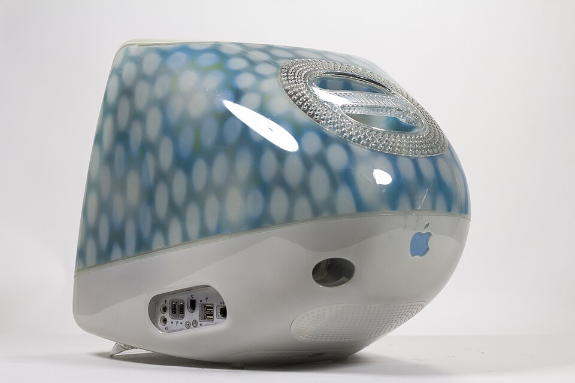
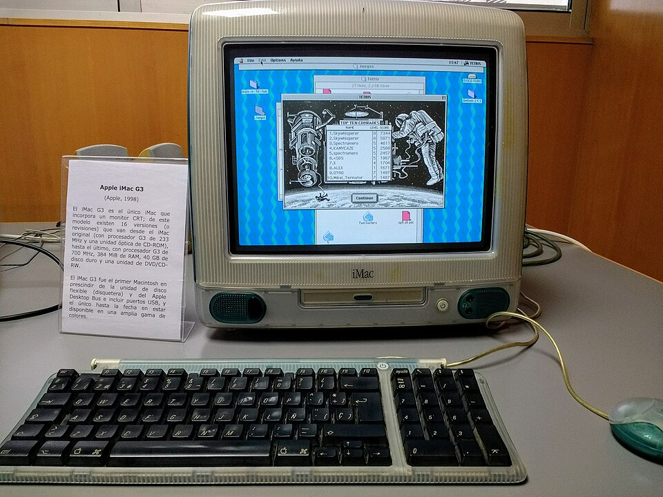
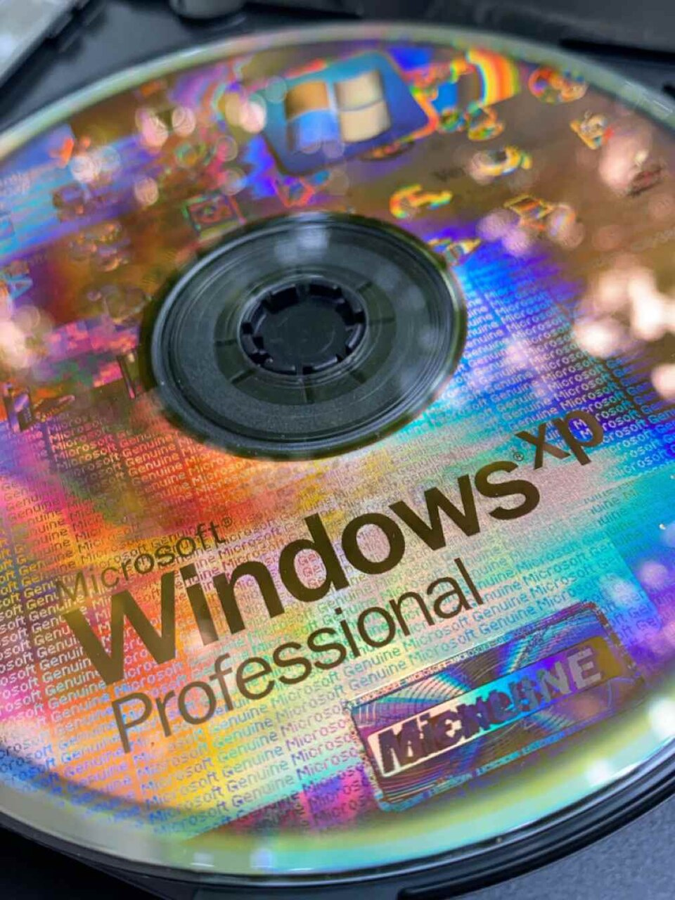

Cass // Studio
Frutiger Aero: Pool & Sky
six glossy stills + one window of sound





1 / 6
About this piece
An ode to the 2002-2012 design era: glossy plastics, swimming pools, blue skies, glass blocks. Scored to Air's 'Playground Love'.
- image 1: File:Mac OS 9 on iMac G3.jpg (via wikimedia)
- image 2: File:SimCity 2000 being played on an iMac G3.jpg (via wikimedia)
- image 3: File:Apple iMac G3 Indigo slot-loading drive-2006-02-14.jpg (via wikimedia)
- image 4: File:Imac G3 Blue Dalmatian 3q back.jpg (via wikimedia)
- image 5: File:Museo de Informática Histórica (MIH) – UNIZAR – Apple iMac G3.jpg (via wikimedia)
- image 6: File:Windows XP Professional installation CD.jpg (via wikimedia)